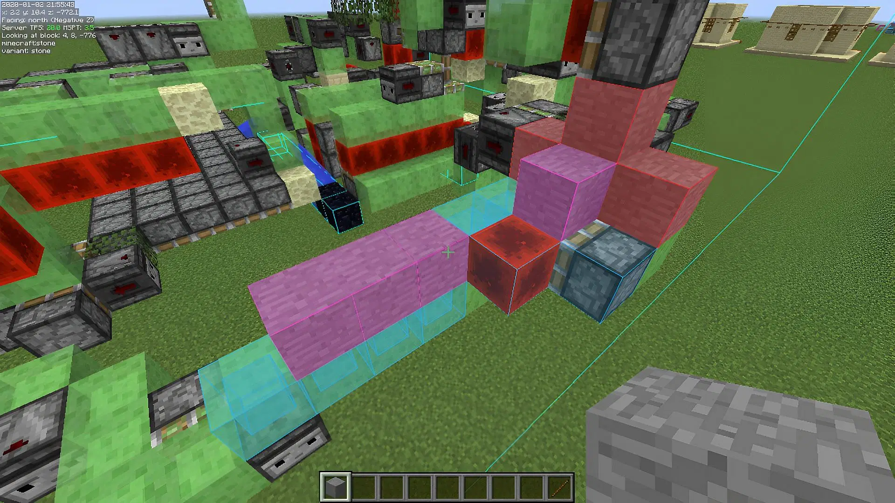
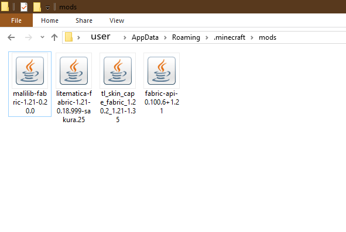
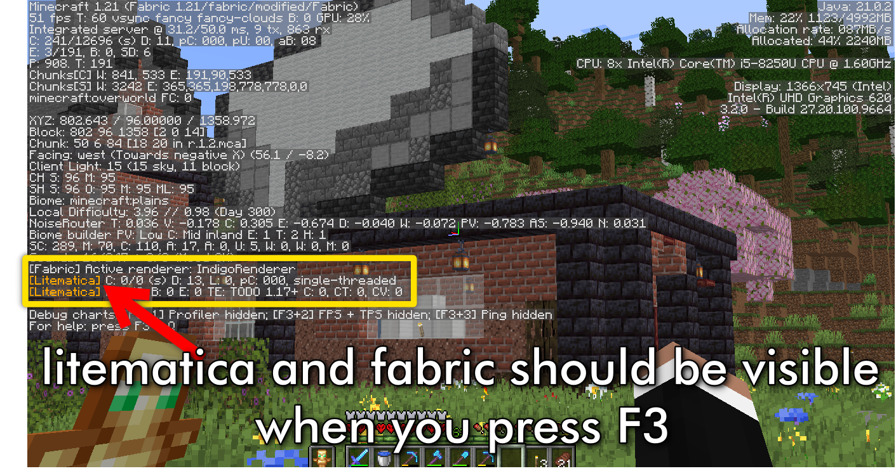
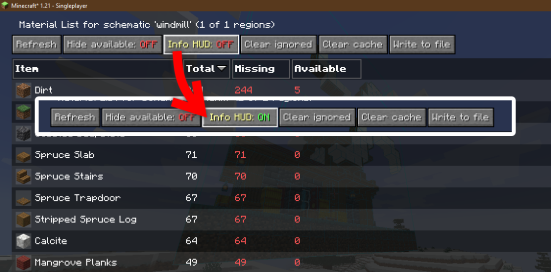

What is Litematica?
Litematica is a powerful Minecraft mod designed for builders and technical players. It allows you to load, create, and replicate schematic builds with precision and ease. Whether you're working on complex redstone contraptions or large-scale structures, Litematica provides the tools to make building more efficient and enjoyable.
- Load Schematics: Overlay premade builds into your Minecraft world for guidance.
- Create Schematics: Save areas of your world as schematic files to reuse or share.
- Material Lists: Automatically generate material lists for Survival Mode.
- Layered Building: View schematics layer by layer for better organization.
- Highly Customizable: Adjust keybinds, rendering options, and configurations to suit your needs.
Compatible with the Fabric mod loader, Litematica requires the MaLiLib library and is a must-have for creative and technical builders.

Prerequisites
Before you can use Litematica, ensure you have the following installed and ready:
- Minecraft Forge or Fabric Loader: These are mod loaders required to run mods like Litematica.
- Litematica Mod: The main mod that provides all the schematic tools and features.
- MaLiLib: A mandatory library mod that powers Litematica’s functionality.
Where to Download
You can download all the required files from their official websites:

Setting Up Litematica
Follow these simple steps to install and set up Litematica:
- Download Fabric Loader: Visit the Fabric Loader official website and download the version that matches your Minecraft version.
- Download Litematica and MaLiLib: Get the Litematica Mod and the MaLiLib Library files that match your Minecraft version.
- Install Fabric Loader: Run the Fabric Loader installer and select your Minecraft directory. Click "Install" to set it up.
- Move Mod Files: Place the downloaded Litematica and MaLiLib `.jar` files into the `.minecraft/mods` folder. If the folder doesn’t exist, create it.
- Launch Minecraft: Open Minecraft using the Fabric Loader profile and ensure everything is working.

After completing these steps, you’ll have Litematica ready to use in your Minecraft world. Don’t forget to customize your keybinds and settings for an optimal experience!
Using Litematica
Litematica is a powerful tool for creating, saving, and building structures in Minecraft. Here’s how you can use it effectively:
- Load a Schematic:
- Press the default keybind (
Mfor the Litematica menu). - Select Schematic Manager and choose your desired schematic file.
- Click on Load Schematic to display the schematic in your world.
- Press the default keybind (
- Move or Adjust Schematic:
- Press the default keybind (
M) and go to Schematic Placement. - Use the Move Tool to adjust the position of the schematic to align with your build location.
- Press the default keybind (
- Build Mode:
- Enable Easy Place Mode from the Configuration menu for fast building.
- Use the material list to gather all required resources for your build.
- Create Your Own Schematic:
- Select Schematic Area in the menu.
- Use the selection tool to mark the corners of the area you want to save.
- Click Save Schematic and give it a name.

With these steps, you can easily build, modify, and share structures in Minecraft using Litematica. Don’t forget to explore the advanced settings for even more customization options!
Tips for Using Litematica
- Keybind Customization: Litematica’s default keybinds might conflict with other mods. Customize them in the Controls menu to avoid overlaps.
- Use Material Lists: Always check the material list before starting a build to ensure you have all the required resources ready.
- Toggle Layers: Use the Layer Mode feature to build one layer at a time. This is especially helpful for large structures.
- Enable Printer Mode: For faster builds, enable the Printer Mode in Easy Place settings. This automates block placement in creative mode.
- Save Frequently: When creating schematics, save your work frequently to avoid losing progress.
- Adjust Render Settings: If you experience lag, tweak the rendering settings in the Litematica menu to reduce schematic render complexity.
- Learn Advanced Features: Explore features like area copy-pasting and block replacing to enhance your building workflow.
- Backup Worlds: Always create a backup of your world before loading large schematics, as they can sometimes cause crashes.
- Practice in Creative Mode: Use creative mode to practice using Litematica tools and settings before applying them in survival mode.


Mastering these tips will help you maximize the efficiency and effectiveness of Litematica, making your Minecraft builds seamless and enjoyable!